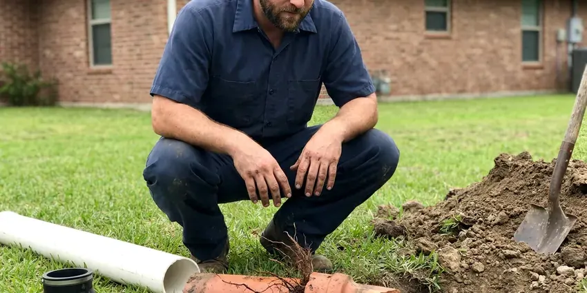

Emergency Plumbing Repair in Spring Valley, NV
Sewage in the tub or water on the floor? FMR Plumbing sends an emergency plumber in Spring Valley, NV with the auger, jetter and parts on the truck.
- Warrantied Repairs
- Nights and Weekends
- Live Phone Shutoff Help
- Upfront Pricing

Emergency Plumber On Call in Spring Valley, NV
Call now and we will walk you through shutting off the water while a plumber heads to your home.
Emergency Plumbing Repair in Spring Valley, NV When Every Minute Counts
FMR Plumbing keeps emergency plumbers on call because pipes do not break on a schedule. The trucks come loaded. We carry water heater parts, valves, copper and PEX, fittings and drain machines, so most emergencies get finished on the first visit instead of a patch and a return trip. You get a written price before we begin any repair.
Work we handle every week:
- Main line backup clearing with augers, jetters and cameras
- Emergency drain and sewer clearing
- Main line clogs cleared with augers and jetters

Additional Plumbing Repair Services in Spring Valley, NV
We offer expert plumbing repair services across Spring Valley, NV to stop leaks, clear blockages, and keep every fixture working the way it should.


Customers
Why Choose FMR Plumbing for Emergency Plumbing Repair in Spring Valley, NV?
Plumbing that fails out of nowhere needs someone who picks up and arrives. FMR Plumbing keeps plumbers on call every night.
- Holidays Included, Our emergency crew works every day of the year, so you are not stuck until the office opens.
- Real Repairs, We cut out the bad section instead of patching it, so you don't get a repeat call.
- On Call Every Night, A plumber is available around the clock, ready to head to your Spring Valley address.
Citywide Coverage
Single-family homes, apartments, condos and businesses in Spring Valley all get the same emergency response. We work holidays. A burst pipe on a holiday weekend does the same damage as one on a Tuesday, so the on-call crew works straight through weekends and holidays.
Experienced Team
Every plumber at FMR Plumbing who takes emergency calls keeps up with training on emergency repairs. Cold snaps are busy. In a freeze, they check every outside wall and crawl space run, since one split line often means another is close behind.
Safety-First Approach
Sewer line breaks and gas leaks get extra care. We suit up for sewage. Plumbers follow code on every repair and wear gloves and eye protection around sewage, with containment so the family stays safe.
Trusted Certified Spring Valley Plumbing Services Professionals
At FMR Plumbing, we take pride in licensed, certified plumbing services throughout Spring Valley, NV. Credentials matter in this trade. Our plumbers hold recognized industry credentials, and they follow strict safety and quality rules on every repair, installation and maintenance call we run.
Call Us Now PHCC Plumbing Contractor Recognition
PHCC Plumbing Contractor Recognition Better Business Bureau (BBB) Accreditation
Better Business Bureau (BBB) Accreditation Angi Certified Pro
Angi Certified Pro ISO 9001 Quality Management Certification
ISO 9001 Quality Management CertificationEmergency Plumbing Repair Services in Spring Valley, NV
Burst Pipe Emergency Repair in Spring Valley
A burst pipe can release several gallons per minute into walls, ceilings or floors. Close the main valve now. Common causes are high pressure, corrosion, a nail through the pipe and hard freezes, and after the repair we check the house pressure and the pipe near the break so it does not happen again.

Commercial Emergency Plumbing Repair in Spring Valley
Apartments, offices and stores cannot sit without water. Tenants notice right away. Restroom backups, grease clogs and failed heaters get handled quickly, and we work with managers so the shutoff hits as few units as possible.
Severe Drain Clog Removal in Spring Valley, NV
Plungers do not clear grease packed ten feet down the line. That takes a cable or jetter. We run a drain cable for hair and soap clogs in sinks and showers, and a hydro-jetter for grease and sludge in kitchen lines and mains, so water flows at full pipe diameter again. Toilets, tubs and mains in Spring Valley, NV all get cleared.
Water Heater Failure in Spring Valley, NV
No hot water on a weeknight is a problem, and a leaking tank is an emergency. We take both seriously. Our technicians test the elements, thermostat, gas valve and relief valve on tank units and run the error codes on tankless systems, then repair it that night or set up a replacement. Service is available across Spring Valley, NV.
Commercial Emergency Plumbing in Spring Valley
A restaurant with a backed-up floor drain cannot serve. Downtime costs money. We handle commercial emergencies like grease line clogs, failed commercial water heaters and broken supply mains, and we stage the work so the rest of the building keeps running while one section is down. Spring Valley businesses reach us day or night.
Severe Clog Removal in Spring Valley, NV
A main line clog backs water into the lowest drain in the house, usually a tub or floor drain. It isn't clean water. We clear it with a cable machine or a hydro-jetter depending on whether it is grease, wipes or tree roots, then run a camera to see why it happened. Drains in Spring Valley, NV are usually clear within the hour.
Water Heater Emergency Repair in Spring Valley
A failed tank can flood a garage or closet. Close the cold valve. After shutting off water and fuel and draining the tank, we decide on repair or replacement, often same-day since common sizes are on the truck. We also repair gas valves, thermocouples, elements and relief valves.

Toilet Overflow and Repair in Spring Valley, NV
An overflowing toilet can soak a subfloor and drip through the ceiling below. Turn the valve behind it. We find out whether it is a clog in the trap, a stuck fill valve or a worn flapper, fix it, and run the toilet several times to make sure it shuts off on its own. Spring Valley, NV bathrooms get cleaned up after.
Local Emergency Plumbers in Spring Valley, NV
Our plumbers work in this area every day. Being close saves time. Emergency calls move to the front, and the plumber can usually fix it on that visit with parts from the truck.
Being local means shorter drives and knowing the homes in this area. It speeds things up. Knowing which areas have galvanized pipe, attic water heaters and hard-to-find shutoffs means we start diagnosing before we park. Phone us the moment something breaks.
FMR Plumbing at a Glance
- Licensed and insured plumbers serving Spring Valley, NV
- 24/7 emergency service with same-day scheduling
- Upfront, flat-rate pricing before work begins
- 4.8-star rated by 903+ Nevada customers
Spring Valley Map
Spring Valley Information
- Population
- 215,597
- Area codes
- Local
- Service area
- Spring Valley and towns within a 40 mile drive
- Nearby
- Summerlin South, Enterprise, Paradise, Winchester
Temperature swings stress tanks and supply lines in Spring Valley, NV, and a hard freeze or heavy rain can burst a line or flood a drain overnight. Drought is the long-term concern in Nevada, and water conservation rules shape everything from fixtures to irrigation.
Talk to a Plumber
Call FMR Plumbing for reliable plumbing work done by licensed pros in Spring Valley, NV.
Our Specialized Plumbing Services in Spring Valley, NV
At FMR Plumbing, you get every kind of plumbing service from one company across Spring Valley, NV. From leak detection to full system installs, our team works fast and charges fair prices on homes and commercial properties alike. Take a look at our core services below:


Our Emergency Plumbing Process in Spring Valley, NV
Here is what happens from the moment you call FMR Plumbing with an emergency in Spring Valley.
Call Right Away
Call (725) 360-1766 as soon as it happens. Dispatch takes the details and gives you an arrival estimate.
Closest Plumber Sent
The closest emergency plumber in Spring Valley heads your way with tools and common parts on board.
Price and Repair
The plumber assesses the damage, explains it and gives you a price. Then the repair gets done.
Frequently Asked Questions About Emergency Plumbing Repair in Spring Valley
A simple clog cleared after hours might run $150 to $350. Bigger jobs cost more. A burst pipe or slab leak can be $500 to $2,000 or higher, mostly because of the labor, the access work and any specialized equipment the repair needs. We quote before starting.
Turn off the water and call a plumber. A clamp buys a little time, but a permanent repair requires cutting out the damaged section and installing proper fittings.
We repair water heaters from Rheem, Bradford White and Navien. That covers faucets as well. On the fixture side, our plumbers work on Moen, Delta, Kohler and others found in local homes and businesses, and the trucks carry the common cartridges and repair kits.
Sudden loss of water pressure is a big one. So are ceiling stains. Gurgling drains, sewage odors, pooled water and the sound of running water with nothing on all point to a serious problem.
First, turn off the main water valve or the valve to the affected fixture. Water heater leak? Close the cold inlet and cut the gas or power, and if there's a gas smell, get out and call the utility from outside.
Get everyone out, pets included. Don't flip any switches. From outside, call 911 or the utility first, then call us, and a licensed plumber will repair the leak once it's safe.
Policies often cover sudden, accidental water damage. Coverage varies by policy. Check with your insurer or read the policy wording, and we can provide detailed invoices, photos and a written description of the failure to support your claim.
Emergency repairs carry the same written workmanship warranty as scheduled work. Materials are covered by the manufacturer too.
What People Are Saying About Our Plumbing Experts?

Sofia M.
Two new toilets went in during one visit. The tech set them on new wax rings and swapped the old supply lines. He also noticed our bathroom faucet dripping and replaced the cartridge while he was there. No mess left behind.
Toilet Installation · Paradise, NV
Paul B.
Our pit pump ran nonstop even in dry weather. The plumber found the check valve was stuck open, so the same water kept cycling back into the pit. New valve, new float switch, done in an hour. It runs quiet now.
Sump Pump · Summerlin South, NVMonica A.
Our water bill nearly doubled in one month with no change in how we used water. The tech checked the meter, heard the leak under the hallway with his equipment, and opened a hole about a foot square. Fixed the same day.
Slab Leak Repair · Las Vegas, NV
Angela D.
Our sump pump quit during a storm and the water was an inch from the basement carpet. FMR Plumbing put in a new pump with a battery backup that same evening. We have had two heavy rains since. It kicked on both times.
Sump Pump · Summerlin South, NVGreg S.
I manage a small strip center with six tenants. FMR Plumbing handles our annual backflow testing and fixed a recurring clog in the shared sewer line that had been backing into the nail salon. Their reports come in clean and on time.
Commercial Plumbing · Whitney, NV
Kevin O.
Before buying our house I paid for a sewer camera inspection. FMR Plumbing found a belly in the line that held standing water about forty feet from the cleanout. We used the video to get the sellers to fix it before closing.
Sewer Camera Inspection · Spring Valley, NV